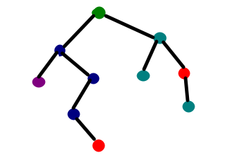
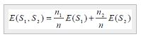

Decision Tree¶
Latar Belakang Decision Tree¶
Sebagai manusia, kita akan selalu dihadapkan pada sebuah masalah. Masalah-masalah yang dihadapi oleh manusia mempunyai tingkat kesulitan dan kompleksitasnya yang sangat bervariasi. Mulai dari yang sederhana dengan sedikit faktor-faktor yang berkaitan dengan masalah, sampai dengan masalah yang sangat rumit dengan banyak sekali faktor yang turut serta berkaitan dengan masalah tersebut serta perlu untuk diperhitungkan.
Dalam menghadapi masalah-masalah tersebut, manusia mulai mengembangkan sebuah sistem yang dapat membantu agar dapat dengan mudah mampu untuk menyelesaikan masalah-masalahnya. Salah satunya dalah Decision Tree (pohon keputusan). Adapun Decision Tree ini adalah sebuah jawaban akan sebuah sistem yang manusia kembangkan untuk membantu mencari dan membuat keputusan untuk masalah-masalah tersebut dan dengan memperhitungkan berbagai macam faktor yang ada di dalam lingkup masalah tersebut.
Dengan pohon keputusan, manusia dapat dengan mudah melihat mengidentifikasi dan melihat hubungan antara faktor-faktor yang mempengaruhi suatu masalah dan dapat mencari penyelesaian terbaik dengan memperhitungkan faktor-faktor tersebut. Peranan pohon keputusan ini sebagai alat Bantu dalam mengambil keputusan (decision support tool) telah dikembangkan oleh manusia sejak perkembangan teori pohon yang dilandaskan pada teori graf
Decision Tree¶
Decision tree salah satu metode klasifikasi yang paling populer, sebab mudah untuk diimplemetasikan oleh user. Setiap orang bahkan disebuah perusahaan, tentu menginginkan sebuah pengambilan keputusan yang tepat dan efisien. Banyak perusahaan yang membutuhkan media seperti Business Intellegence guna mencapai pengambilan keputusan yang di inginkan. Disinilah, penggunaan dari Decision tree itu sangat dibutuhkan.

Decision tree (pohon keputusan) adalah model prediksi menggunakan struktur pohon atau struktur berhirarki. Mengubah data menjadi decision tree dan aturan-aturan keputusan.
Manfaat Decision Tree¶
Manfaat utama dari penggunaan pohon keputusan adalah kemampuannya untuk mem-break down proses pengambilan keputusan yang kompleks menjadi lebih simple. Dengan itu, pengambil keputusan akan lebih menyelesaikan solusi dari permasalahan.
Decision tree juga berguna untuk mengeksplorasi data, menemukan hubungan tersembunyi antara sejumlah calon variabel input dengan sebuah variabel target. Memadukan antara eksplorasi data dan pemodelan, sehingga sangat bagus sebagai langkah awal dalam proses pemodelan bahkan ketika dijadikan sebagai model akhir dari beberapa teknik lain.
Model Decision Tree¶
Model dari Decision Tree ini menggunakan struktur pohon atau struktur berhirarki untuk prediksinya.
Contoh dari pohon keputusan dapat dilihat di gambar berikut ini :
Disini setiap percabangan menyatakan kondisi yang harus dipenuhi dan tiap ujung pohon menyatakan class data. Gambar di atas adalah identifikasi pembeli computer dari pohon keputusan tersebut diketahui bahwa salah satu kelompok yang potensial membeli komputer adalah orang yang berusia di bawah 30 tahun dan juga pelajar. Setelah sebuah Decision Tree dibangun maka dapat digunakan untuk mengklasifikasikan record yang belum ada kelasnya.
Pertama dari node root, menggunakan tes terhadap atribut dari record yang belum ada kelasnya tersebut lalu mengikuti cabang yang sesuai dengan hasil dari tes tersebut. Hasil tersebut akan membawa kepada internal node (memiliki satu cabang masuk dan dua atau lebih cabang yang keluar), dengan cara harus melakukan tes lagi terhadap atribut atau node daun. Record yang kelasnya tidak diketahui kemudian diberikan class yang sesuai dengan kelas yang ada pada node daun.
Pada pohon keputusan setiap simpul daun menandai label class. Proses dalam pohon keputusan yaitu mengubah bentuk data (tabel) menjadi model tree kemudian mengubah model pohon tersebut menjadi aturan rule.
Tree dibangun dengan cara membagi data secara rekursif hingga tiap bagian terdiri dari data yang berasal dari kelas yang sama. Bentuk pemecahan (split) yang digunakan untuk membagi data tergantung dari jenis atribut yang digunakan dalam split**.**
Split untuk atribut numerik yaitu mengurutkan contoh berdasarkan atribut kontiyu A, kemudian membentuk minimum permulaan (threshold**)** M dari contoh-contoh yang ada dari kelas mayoritas pada setiap partisi yang bersebelahan, lalu menggabungkan partisi-partisi yang bersebelahan tersebut dengan kelas mayoritas yang sama.
Split untuk atribut diskret A mempunyai bentuk :
value (A) ε X dimana X ⊂ domain(A)Untuk melakukan pemisahan obyek (split) dilakukan tes terhadap atribut dengan mengukur tingkat ketidakmurnian pada sebuah simpul (node).
Gain ratio (rasio pemulihan) ada pada algoritma C.45. Sebelum menghitung rasio perolehan, perlu menghitung dulu nilai informasi dalam satuan bits dari suatu kumpulan objek.
Cara menghitungnya dilakukan dengan menggunakan konsep entropi :
Keterangan :
S = ruang (data) sampel yang digunakan untuk pelatihan
p+ = jumlah yang bersolusi positif atau mendukung pada data sampel untuk kriteria tertentu
p- = jumlah yang bersolusi negatif atau tidak mendukung pada data sampel untuk kriteria tertentu.
Entropi(S) sama dengan 0, jika semua contoh pada S berada dalam kelas yang sama.
Entropi(S) sama dengan 1, jika jumlah contoh positif dan negative dalam S adalah sama.
Entropi(S) lebih dari 0 tetapi kurang dari 1, jika jumlah contoh positif dan negative dalam S tidak sama.
Entropi split yang membagi S dengan n record menjadi himpunan-himpunan S1 dengan n1 baris dan S2 dengan n2 baris adalah :

Kemudian menghitung perolehan informasi dari output data atau variabel dependent y yang dikelompokkan berdasarkan atribut A, dinotasikan dengan gain (y,A). Perolehan informasi*,* gain (y,A), dari atribut A relative terhadap output data y adalah :
Keterangan :
Nilai (A) = semua nilai yang mungkin dari atribut A
yc = subset dari y dimana A mempunyai nilai c.
Term pertama dalam persamaan diatas adalah entropy total y dan term kedua adalah entropy sesudah dilakukan pemisahan data berdasarkan atribut A.
Untuk menghitung rasio perolehan perlu diketahui suatu term baru yang disebut pemisahan informasi **(SplitInfo). **
Pemisahan informasi dihitung dengan cara :
S1 sampai Sc adalah c subset yang dihasilkan dari pemecahan S dengan menggunakan atribut A yang mempunyai sebanyak c nilai. Selanjutnya rasio perolehan (gain ratio) dihitung dengan cara :
Konsep Decision Tree¶
Nama lain dari decision tree adalah CART (Classification and Regression Tree). Dimana metode ini merupakan gabungan dari dua jenis pohon, yaitu classification tree dan juga regression tree.
Untuk memudahkan, berikut ilustrasi dari keduanya :
Gambar diatas merupakan contoh dari classification tree, sedangkan untuk contoh dari regression tree ada dibawah ini :
Dalam beberapa aplikasi, akurasi dari sebuah klasifikasi atau prediksi adalah satu-satunya hal yang ditonjolkan dalam metode ini, misalnya sebuah perusahaan direct mail membuat sebuah model yang akurat untuk memprediksi anggota mana yang berpotensi untuk merespon permintaan, tanpa memperhatikan bagaimana atau mengapa model tersebut bekerja.
Kelebihan Decision Tree¶
- Menghilangkan perhitungan-perhitungan yang tidak dibutuhkan. Sample yang diuji hanya berdasarkan kriteria atau sesuai dengan kelas tertentu.
- Pengambilan keputusan yang sebelumnya kompleks dan sangat global diubah menjadi lebih simpel dan spesifik.
- Metode ini menghindari munculnya permasalahan-permaslahan. Dengan cara menggunakan kriteria yang jumlahnya lebih sedikit pada setiap node internal tanpa banyak mengurangi kualitas keputusan yang dihasilkan.
- Bersifat fleksibel. Kefleksibelan metode ini meningkatkan kualitas keputusan yang dihasilkan.
- Memilih fitur dari internal node yang berbeda, fitur yang terpilih akan membedakan suatu kriteria dibandingkan kriteria yang lain dalam node yang sama.
Kekurangan Decision Tree¶
-
Kesulitan dalam mendesain pohon keputusan yang optimal.
-
Hasil kualitas keputusan yang didapatkan dari metode pohon keputusan sangat tergantung pada bagaimana pohon tersebut didesain.
-
Terjadi overlap. Hal ini sering terjadi ketika menggunakan kelas-kelas dan kriteria yang digunakan dalam jumlah besar. Hal tersebut juga dapat menyebabkan meningkatnya waktu pengambilan keputusan dan jumlah memori yang diperlukan.
-
Pengakumulasian jumlah eror dari setiap tingkat dalam sebuah pohon keputusan yang besar.
Implementasi¶
Decision tree atau gabungan dari Classification and Regression Tree. Di sini, kita akan mencoba mengimplematasikan dari salah satu penggabungan itu, yaitu Classification menggunakan python dan beberapa libary.
[ Implementasi : Classification Tree ]¶
Classification Tree ini menggunakan data :
pima-indians-diabetes.cvs (bisa di unduh : https://www.kaggle.com/uciml/pima-indians-diabetes-database).
Data tersebut jadikan satu folder dengan file pyCharm atau programnya.

Langkah 1 :
Sebelum menuliskan source code, kita harus menginstall library terlebih dahulu. Dalam implementasi Classification Tree, perlu library pandas dan scikit_learn. Cara menginstallnya, ketikan code dibawah ini kedalam command prompt :
pip install pandaspip install scikit-learnLangkah 2 :
Setelah libary terpasang, saatnya kita mulai mengetikan programnya. Pertama adalah load libaries atau impor, seperti pada source code dibawah ini :
#load libaries
import pandas as pd
from sklearn import tree
from sklearn.tree import DecisionTreeClassifier #Import Decision Tree Classifier
from sklearn.model_selection import train_test_split #Import train_test_split function
from sklearn import metrics #Import scikit-learn metrics module for accuracy calculationMenjalankan library yang telah kita pasang atau install melalui command prompt. (langkah 1)
Import Decision Tree Classifier : Impor Klasifikasi Pohon Keputusan
Import train_test_split function : Impor fungsi train_test_split
Import scikit-learn metrics module for accuracy calculation : Import scikit-learn metrik untuk modul perhitungan akurasi
Langkah 3 :
Tahap selanjutnya adalah col_names , memberikan nama pada tabel di dalamdata :
col_names = ['pregnant', 'glucose', 'bp', 'skin', 'insulin', 'bmi', 'pedigree', 'age', 'label']Langkah 4 :
Memasuki langkah keempat adalah tahap load dataset (memuat database). Bisa ketikan source code seperti pada gambar dibawah ini :
# load dataset
pima = pd.read_csv("pima-indians-diabetes.csv", header=None, names=col_names)
pima.head()Langkah 5 :
Selanjutnya adalah Feature Selection (pemilihan fitur), tahap split dataset in features and target variable atau memisahkan dataset dalam fitur dan variabel target. Dengan source code seperti berikut :
#split dataset in features and target variable
feature_cols = ['pregnant', 'insulin', 'bmi', 'age','glucose','bp','pedigree']
X = pima[feature_cols] # Features
y = pima.label # Target variableLangkah 6 :
Tahap kelima adalah memasukan Split dataset into training set and test set yaitu memisahkan dataset dalam fitur dan variabel target. Tahap ini masih sama yaitu tahap Feature Selection :
# Split dataset into training set and test set
X_train, X_test, y_train, y_test = train_test_split(X, y, test_size=0.3, random_state=1) # 70% training and 30% test#70% training and 30% test : 70% data dari bill_authentication.csv adlah data training dan 30% dalah data tes
Langkah 7 :
Selanjutnya adalah tahap Create Decision Tree classifer object, yaitu tahap membuat objek classifier Desicion tree. Berikut adalah Source code nya :
# Create Decision Tree classifer object
clf_gini = DecisionTreeClassifier()**Langkah 8 : **
Tahap ketujuh adalah proses Train Decision Tree Classifer, dengan cara yang sama, memasukkan source code dibawah ini :
# Train Decision Tree Classifer
clf_gini = clf_gini.fit(X_train,y_train)Langkah 9 :
Kemudian tahap prediksi pada dataset yang diuji, atau biasa disebut dengan Predict the response for test dataset :
#Predict the response for test dataset
y_pred = clf_gini.predict(X_test)Langkah 10 :
Tahap terakhir adalah model accuracy. Dimana pada tahap ini dicek accuracy pada data tersebut :
# Model Accuracy, how often is the classifier correct?
print("Accuracy:",metrics.accuracy_score(y_test, y_pred));[ Hasil Implementasi ]
Dan berikut adalah hasil dari Algorithm Classification tree :
Accuracy: 0.6623376623376623
Process finished with exit code 0Jadi, accuracy dari Algorithm Classification tree dengan data : bill_authentication.csv adalah 6,6%. Sehingga dapat di ambil kesimpulan bahwa data accurasy tersebut standart.